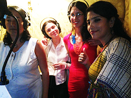
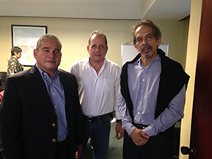
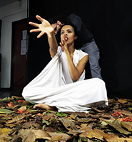
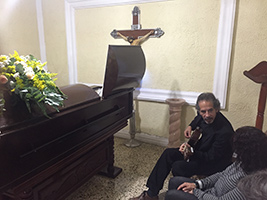

INFO: FUNCIÓN | INTEGRANTES | TARIFAS | DISTRIBUCIÓN
| RIDER |
I N I C I O
AÑOS:
2005 - 09 | 2010 | 2011 | 2012 | 2013 | 2014 | 2015 |
2016 | 2017 | 2018 | 2020 | 2021 | 2022 | 2023 |
 C O N C I E R T O
S & A C T I V I D A D E
S
C O N C I E R T O
S & A C T I V I D A D E
S
2 0 1 9 (23)
I N I C I O
AÑOS:
2005 - 09 | 2010 | 2011 | 2012 | 2013 | 2014 | 2015 |
2016 | 2017 | 2018 | 2020 | 2021 | 2022 | 2023 |
2 0 1 9 (23)
Enero
Febrero
Marzo
Abril
Mayo
Junio
Julio
Agosto
Septiembre
Octubre
Noviembre
Diciembre
Miércoles a viernes, 09 al 11-01-2019 (Emilio)
Ponencia "Pulso, reggaetón y sexo: El tempo del amor" en el Tercer Congreso Chileno de Estudios en Música Popular (ASEMPCh), Instituto de Música, Universidad Alberto Hurtado, Santiago de Chile.
Diferentes ocasiones durante el mes. (Emilio & Jesús)
Edición y mezcla del CD con Jesús Enrique Torres, Estudios Edén, San Antonio de los Altos.
Febrero
Diferentes ocasiones durante el mes. (Emilio & Jesús)
Edición y mezcla del CD con Jesús Enrique Torres, Estudios Edén, San Antonio de los Altos.
Marzo
Diferentes ocasiones durante el mes. (Emilio & Jesús)
Edición y mezcla del CD con Jesús Enrique Torres, Estudios Edén, San Antonio de los Altos.

Sábado, 16-03-2019, 3 pm (Valentina, Marcy, Pavlova, Rocío, Jesús, Emilio)
Inicio de sesiones de grabación para los coros de Guarapiche Blues, Estudios Edén, Los Picachos, San Antonio de los Altos.
Miércoles, 27-03-2019, 10:00 am (Emilio)
Se entregó la Carta de Solicitud y los "Considerandos" a la Comisión de Ambiente, Asamblea Nacional, Caracas.
Abril

Miércoles, 03-04-2019, 11:00 am (Emilio)
Se entregó la Carta de Solicitud y los "Considerandos" al Presidente de la Comisión de Ambiente, Diputado Gregorio Graterol Roque, en el Hemiciclo Protocolar, Asamblea Nacional, Caracas, en sesión plenaria.
Miércoles, 24-04-2019, 10:00 am (Emilio)
Se entregó (de nuevo) la Carta de Solicitud y los "Considerandos" a la Comisión de Ambiente, Asamblea Nacional.
Diferentes ocasiones durante el mes. (Emilio & Jesús)
Edición y mezcla del CD con Jesús Enrique Torres, Estudios Edén, San Antonio de los Altos.
Mayo
Sábado y Domingo, 04, 05-05-2019, 3 pm, 11 am (Emilio haciendo el PPT del concierto con la ODILA)
Presentación de la ODILA en "Voces y Ritmos de América", Sala José Félix Ribas, Teatro Teresa Carreño, incluyó su composición Etnocidio. Dirección Jesús Bosque.
Domingo,19-05-2019, 5 pm (Manuel, Dha, Emilio)
Concierto en casa de Verónica Nouel, Caracas.
Diferentes ocasiones durante el mes. (Emilio & Jesús)
Edición y mezcla del CD con Jesús Enrique Torres, Estudios Edén, San Antonio de los Altos.
Junio
Miércoles, 05-06-2019, 9 am (Emilio)
Ponencia "Composición en Venezuela con instrumentos étnicos: ¿Neo-nacionalismo o Globalización?", en el V Festival de Saberes, Sonidos y Sabores, Rectorado UPEL, Parque del Oeste, Caracas.

Sábado, 05-06-2019, 8 pm (Ómer, Jesús, Juan Carlos Yegres, Emilio)
Sesión de grabación de la batería de Guarapiche Blues, Estudios Humana, Caracas.

Miércoles, 26-06-2019, 8:00 pm
Estreno en YouTube de la lista de 16 videos dedicados al aprendizaje de las Escalas de Blues dentro del método "Patrones".
https://www.youtube.com/@PatronesGuitarraEmilio
Diferentes ocasiones durante el mes. (Emilio & Jesús)
Edición y mezcla del CD con Jesús Enrique Torres, Estudios Edén, San Antonio de los Altos.

Julio
Jesús Bosque, Israel Girón, Gilberto Simoza, Emilio Omar Oliveros, Emilio
Sábado y Domingo, 13, 14-07-2019, 3 pm, 11 am (Emilio haciendo el PPT del concierto con la ODILA)
Presentación de la ODILA en "Viaje Sonoro Latinoamericano", Sala José Félix Ribas, Teatro Teresa Carreño, incluyó su composición Etnocidio. Dirección Jesús Bosque.
Diferentes ocasiones durante el mes. (Emilio & Jesús)
Edición y mezcla del CD con Jesús Enrique Torres, Estudios Edén, San Antonio de los Altos.
Agosto

Miércoles, 07-08-2019, 9:00 am (Emilio)
Emilio asistió a la Comisión Permanente de Ambiente, Asamblea Nacional, con derecho de palabra donde se entregó formalmente la solicitud de enmienda con exposición y debate de motivos.
Diferentes ocasiones durante el mes. (Emilio & Jesús)
Edición y mezcla del CD con Jesús Enrique Torres, Estudios Edén, San Antonio de los Altos.
Septiembre
Viernes, 06-09-2019, 11 am (Emilio invitado por Carlos Conde de Washée)
Participación en el programa de TV "La Hora Clave" en Globovisión, sobre música e instrumentos indígenas,
con Manuel Felipe Sierra, ejecución de la guitarra y entrevista.
Diferentes ocasiones durante el mes. (Emilio & Jesús)
Edición y mezcla del CD con Jesús Enrique Torres, Estudios Edén, San Antonio de los Altos.
Sábado, 26-09-2019, 10 am (Emilio)
Charla-Taller "Joroponovo: Hacia una Nueva Expresión", dentro del 'Seminario Polvaredas, Intercambio de Saberes', Fundación Coreoarte, Casa de la Diversidad, Caracas.
Octubre
Todo el mes, (Emilio & Jesús)
Edición y mezcla del CD con Jesús Enrique Torres, Estudios Edén, San Antonio de los Altos.
Noviembre
10-11-2019, en el cumpleaños de Cadence, (Emilio y Jesús)
¡Al fin listo el disco Guarapiche Blues!
15 al 26-11-2019 (Emilio)
Invitación al TwinFin Surf Camp, Adeje Bajo, Tenerife, a tocar en las clases de Yoga y cargarme de energía.
Viernes, 22-11-2019, 9:00 pm (Emilio con Steve Russo, Jenka Nordholm y Marie Brüss)
Concierto "Compartir Belleza", TwinFin Surf Camp, Adeje Bajo, Tenerife, con ex-alumno Juan Tepuy, invitado especial en la flauta Bansuri.

Sábado, 23-11-2019, 9:30 pm (Emilio con Steve Russo, Jenka Nordholm y Marie Brüss)
Concierto "Resplandor", Las Noches de Trova, Jóspital, San Francisco de La Laguna, Tenerife. Ver Video

{kind=link}
Diciembre

Viernes y Sábado, 06, 07-12-2019, todo el día, (la banda completa con Nayibe)
Grabación del video Guarapiche Blues, en ESCINETV, Producción María Cristina Capriles & Ozono Jazz, Director: Jorge Gómez Plazola.
Domingo, 15-12-2019, 8:00 pm (Emilio)
Toque en la fiesta de Alfredo Rugeles 70º Cumpleaños, en su casa, Caracas.

Viernes, 27-12-2019, 3 pm (Emilio)
Ejecución en velorio de Consuelo Lares, madre de Tito Lares, Funeraria de Carrizal, edo. Miranda, Venezuela.